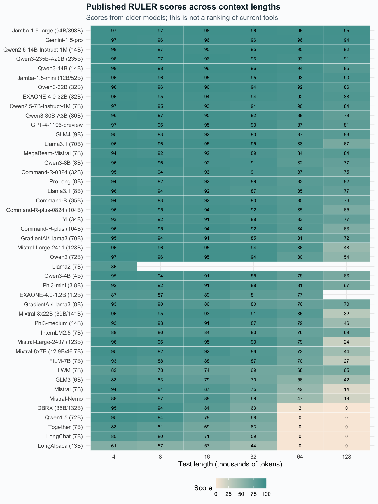
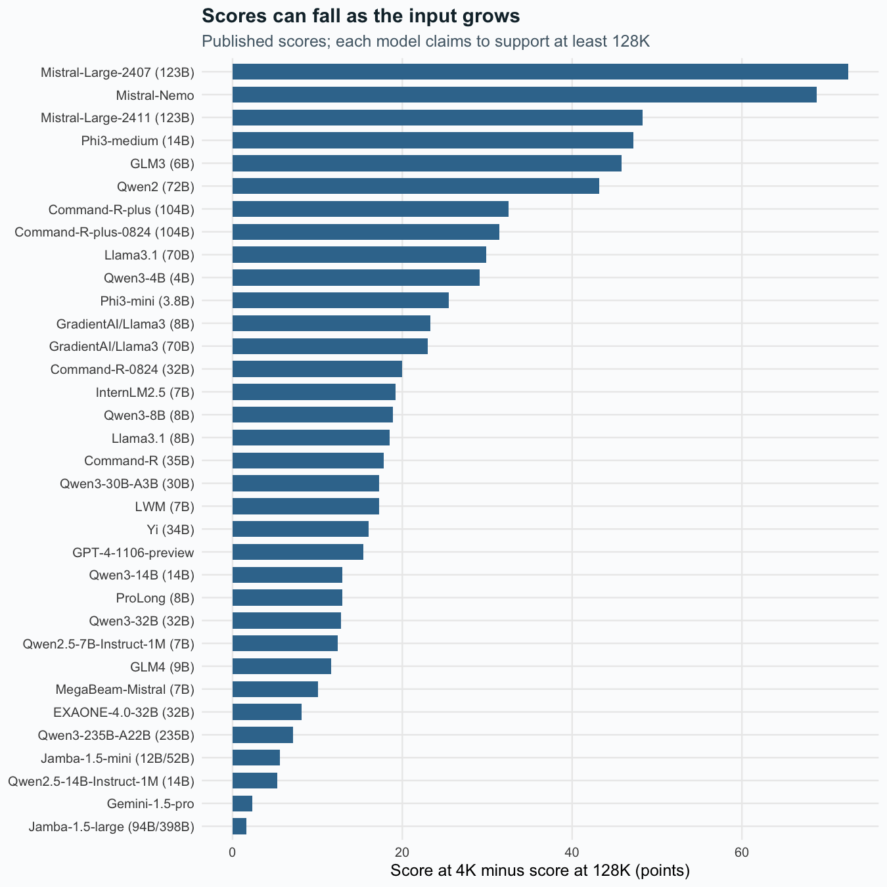

We use a saved version of the RULER score table. It has 264 scores for 45 model versions. Other researchers ran these tests. The table gives combined scores, not each trial or monthly results. It includes older models and scores from outside teams. Their test details can differ.
What happens as the input grows?
order_models <- rr |>group_by(model) |>summarise(avg=mean(score)) |>arrange(avg) |>pull(model)ggplot(rr,aes(factor(tested_tokens/1000),factor(model,levels=order_models),fill=score)) +geom_tile(colour='white') +geom_text(aes(label=sprintf('%.0f',score)),size=2.8) +scale_fill_gradient(low='#f9eadc',high='#469d9b',limits=c(0,100)) +labs(x='Test length (thousands of tokens)',y=NULL,fill='Score',title='Published RULER scores across context lengths',subtitle='Scores from older models; this is not a ranking of current tools')

Some tests use more text than a model claims to support. The first chart keeps those scores. The comparisons below use lengths within each claimed limit. Stars in the source mark scores from outside teams. Our data file keeps that flag. We leave missing scores blank. We keep the source labels 4K–128K; these are length labels, not exact counts from each model’s tokenizer.
Compare each model at two lengths
ggplot(drops,aes(reorder(model,drop),drop)) +geom_col(fill='#39769c',width=.7) +coord_flip() +labs(x=NULL,y='Score at 4K minus score at 128K (points)',title='Scores can fall as the input grows',subtitle='Published scores; each model claims to support at least 128K')

We compare 34 models with scores at both lengths and a claimed limit of at least 128K. The median drop is 18.1 points. The median is the middle value when we sort the drops. These are older model tests. They do not predict how current tools will score.
We also fit a regression with model fixed effects. This lets each model have its own starting score. Within the claimed limits, the fit links each doubling of length to a -4.33 point score change. This is a pattern in the table, not proof that length caused the change. We lack scores for each trial, so we report no trial-level standard errors or p-values.
A preprint on faults in storage, search, and answer writing
That one stage causes most faults in all systems
What this means for our tool
Keep the source text with the facts drawn from it. Track updates and which project each fact belongs to. Test both the search step and the final answer. Compare the tool with simple search and a full chat history. Measure the costs before claiming the tool pays for itself.